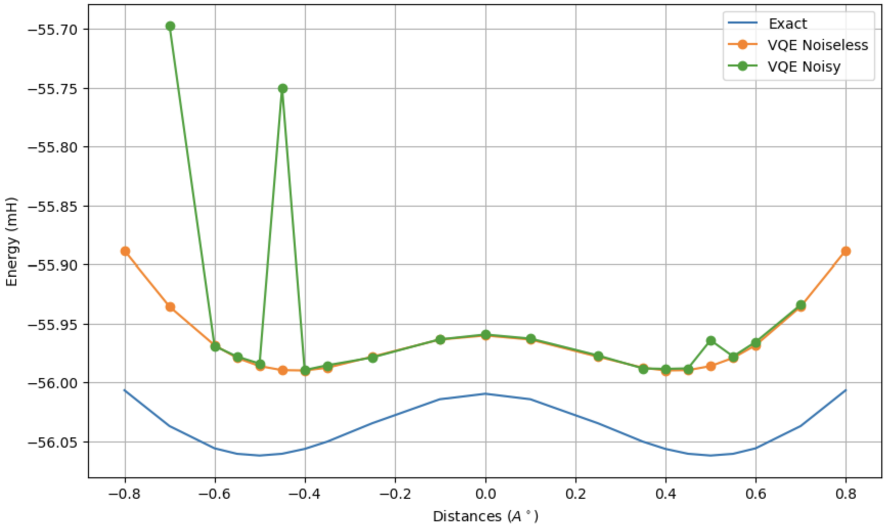

Hi!
I’m Lev, a 3rd-year physics and mathematics undergraduate student at Harvey Mudd College in Claremont, CA. Outside of coursework, I conduct research in entanglement witnessing with the HMC Quantum Optics Group, organize the HMC incoming class' orientation as an Orientation Director for the HMC Residential Life Office, and study up on fascinating topics. I am particularly interested in quantum information theory and quantum gravity, and am super excited to keep learning. I'm also a starter for the Claremont Colleges Men's Volleyball team, a Mentor for Atwood Dorm, and an avid lover of vintage sweaters! Feel free to contact me via email or using the Contact page.
Research
-
Quantum Optics Group, Harvey Mudd College Spring 2024 - Present
The HMC Quantum Optics group (or Lynn Lab), led by Professor Theresa Lynn, investigates quantum communication protocols for polarization-entangled two photon systems. Our current work focuses on developing a two-step adaptive choice method for determining the entanglement of two photons via a linear optical apparatus.
Check out the Research and Projects page for more details on my contributions and see Professor Lynn's page for a more general overview of the group's work. -
Quantum Materials and Nanodevice Laboratory, San Francisco State University Summer 2023
The Quantum Materials Lab was led by the late Professor AKM Newaz at SFSU. As an undergraduate researcher, I studied shifts in the Raman peaks of Molybdenum Disulfide when developed on gold substrate in ambient vs. glove box environments. Using Raman spectrometry and Python for data analysis, we confirmed differences in biaxial strain and doping between the two preparation situations, showing potential impacts for solar and biomedical applications. See the Research and Projects page for more details.
Projects
-
Modeling Bio-Materials to Second Order Fall 2024
Material properties of a spring determine the proportionality between its restorative force and displacement. In the large strain limit, certain biological materials behave with growing stiffness; collaborator Charlie Schofield and I approximated this behavior using a second order correction term to Hooke's law. We then simulated a simplified biological system by putting massless, non-linear springs in series in between masses representing joints. Using Python and Mathematica, we evaluated the non-analytically solvable equations of motion to view chaotic behavior while varying spring constants, masses, and initial conditions. See the Research and Projects page for more details, or read the write up/code below.

Figure 1. Classical non-chaotic system analog using equal masses and spring constants. Initial positions are both zero relative to equilibrium, the first mass' velocity is zero and the second is 0.5 m/s towards the first mass. -
Demonstrating Ammonia SDMP via Variational Quantum Eigensolvers, Spring 2024
Variational quantum eigensolvers (VQEs) are a type of algorithm that map a hamiltonian to a quantum circuit to calculate the ground state energy of a system. VQEs are strong due to them using classical and quantum computers for their respective strengths--the first for optimization and the second for measuring the qubits in our quantum circuit.
I calculated the ground state energies of ammonia NH3 in various configurations, demonstrating a symmetric dual minima potential (SDMP) between two states using Qiskit VQE implementations and the IBM Cloud Platform. Figure 1 includes results from both a noiseless and noisy quantum computer simulator. See the Research and Projects page or links below for a longer write up, results using IBM's quantum computer in Kyoto, an example calculation of H2 ground state energy, and all code involved.Figure 1. Ammonia ground state energy as a function of nitrogen distance from planar hydrogens.